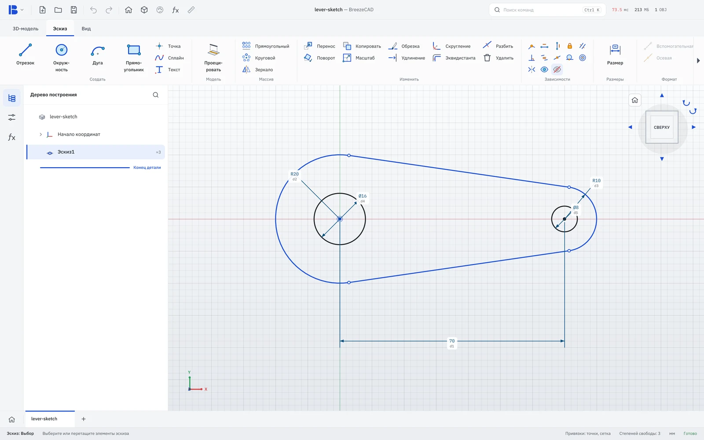
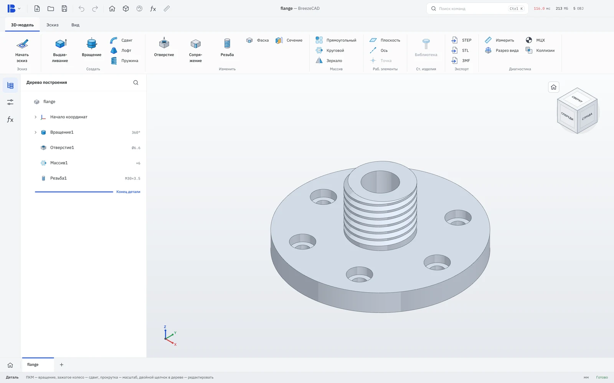
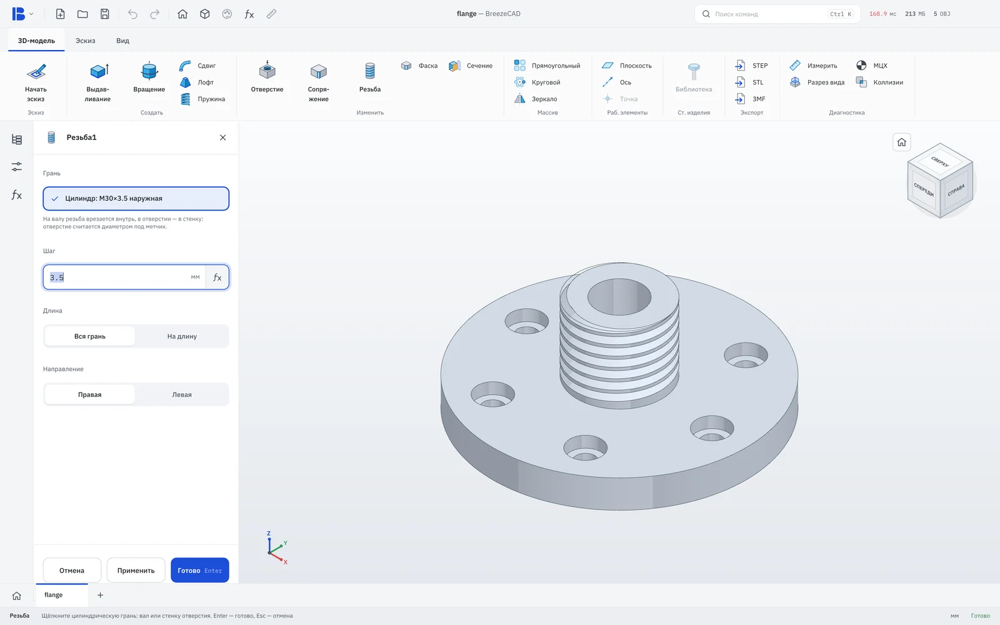
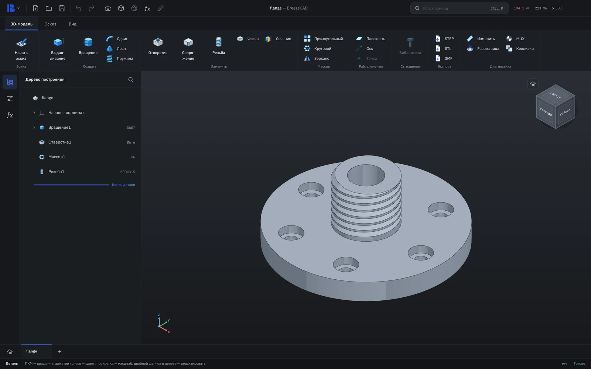
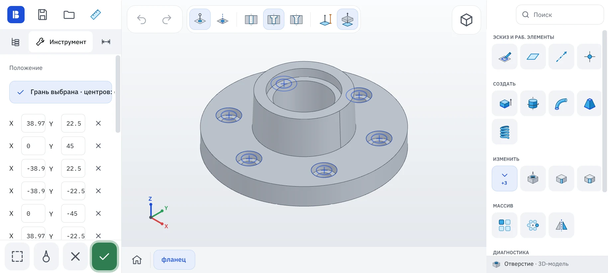
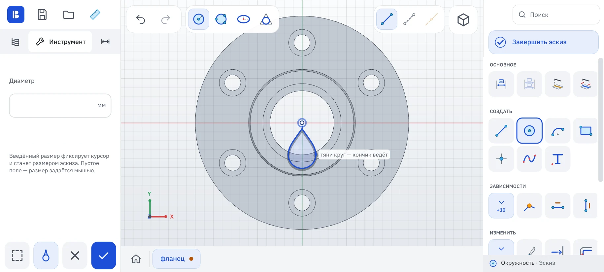

Бесплатный САПР для 3D-печати и ЧПУ. Компьютер и телефон, без интернета и подписок.
0.2.4-Beta · Windows · macOS · Linux · Android
↻ потяните, чтобы покрутить · штуцер M20 / M16
01 · интерфейс
Ничего лишнего на экране, минимум кликов на операцию и никаких окон поверх модели.
Набросали контур — размеры встают прямо над линиями. Касания и зависимости без лишних окон.

Выдавливание, вращение, отверстия, массивы. Дерево построения всегда слева, под рукой.

Щелчок по валу или отверстию — размер резьбы программа определит сама.

Светлая и тёмная тема, масштаб под любой экран, подписи кнопок можно спрятать.

02 · размер
Вся программа целиком — меньше сотни мегабайт. Скачивается за минуту даже по мобильному интернету.
03 · производительность
Открывается раньше, чем вы успеете моргнуть, и не просит дорогого железа.
проверено на
Отдельная видеокарта не нужна. Работает на процессорах x64 и ARM.
Windows 10/11 · macOS 14+ на Apple Silicon · Linux x86_64 (Ubuntu 20.04+, Debian 10+, Fedora и другие)


05 · доступ
Скачали — и работаете. Программа ничего не просит взамен и никуда не звонит.
Всё работает офлайн — в цеху, в дороге, на даче.
Ни регистрации, ни входа. Открыли — работаете.
Ваши модели и действия остаются на вашем устройстве.
Никаких активаций и привязки к компьютеру.
Бесплатно навсегда. Это обещание, а не пробный период.
Исходники на GitHub, лицензия MPL 2.0.
скачать
Ссылки всегда ведут на последнюю версию — сейчас это 0.2.4-Beta.
Каждая функция BreezeCAD — ответ на то, что годами бесило нас в других программах.
07 · новости
Анонсы версий, «Боль инженера» и ранние сборки — там, где удобно вам.